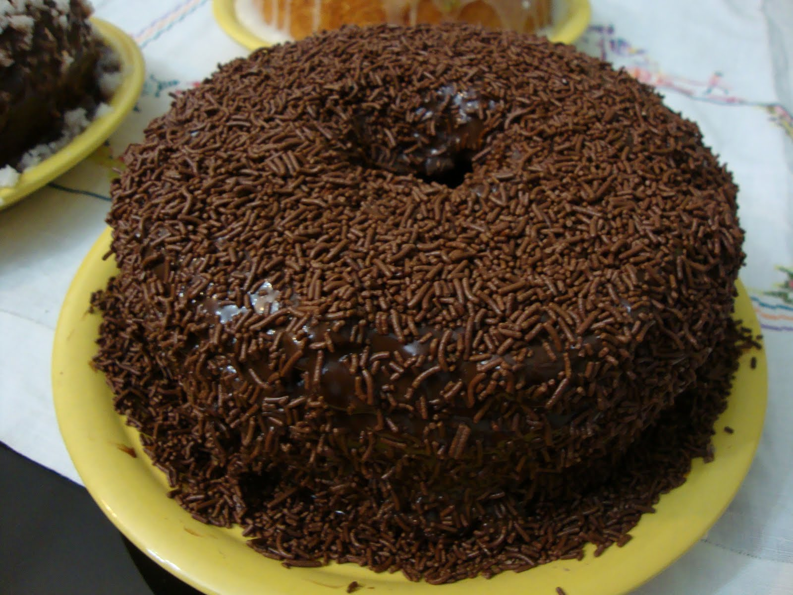
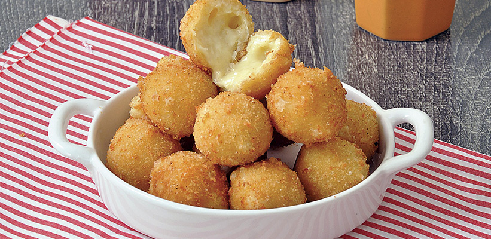
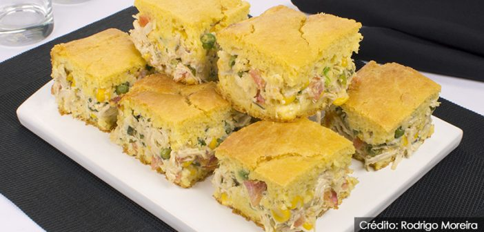
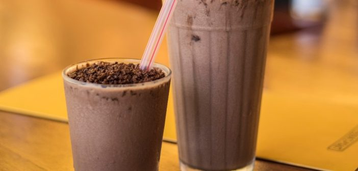
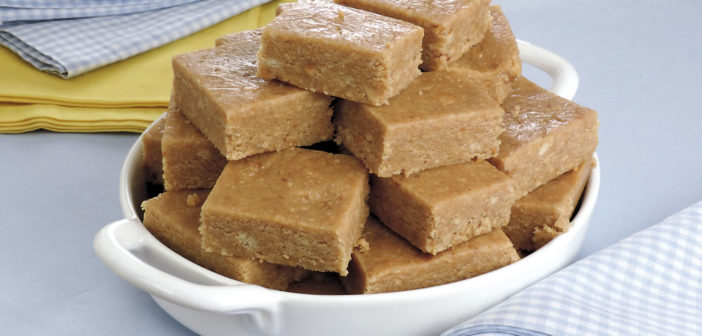
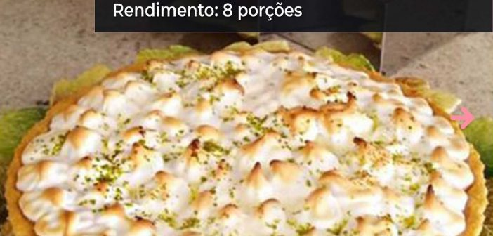
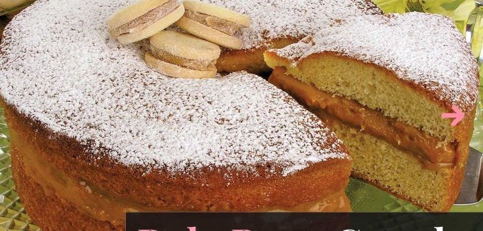

SITE DE RECEITAS

Bolo de Chocolate simples
Ingredientes
Massa:
3 copos de trigo
2 copos de açúcar
1 copo de chocolate em pó
1 copo de óleo
3 ovos
1 copo de água quente
1 colher de sopa de fermento em pó
Cobertura:
3 colheres de margarina
4 colheres de chocolate em pó
4 colheres de açúcar
3 xícaras de leite
Modo de Preparo
Massa:
Em uma tigela misturar o açúcar e o chocolate em pó
Em seguida, misturar as gemas e o óleo
Aos poucos acrescentar a água e o trigo
Em seguida juntar o fermento e por fim juntar as claras em neve
Despejar numa forma untada e colocar para assar por aproximadamente 40 minutos
Cobertura:
1.Misturar tudo numa panela, em fogo baixo
2.Não parar de mexer até ficar cremoso
3.Depois despejar em cima do bolo ainda quente

Bolinha de queijo
Ingredientes
200 g de queijo meia cura ralado
2½ colheres (sopa) de farinha de trigo
2 claras
1 colher (chá) de fermento químico em pó
ovo e farinha de rosca para empanar
óleo para fritar
Modo de Preparo
1.Em um recipiente médio, coloque o queijo ralado, a farinha, as claras batidas em neve e o fermento. Misture com as mãos até obter uma massa homogênea.
2.A seguir, enrole pequenas bolinhas do mesmo tamanho. Passe-as pelo ovo e pela farinha de rosca.
3.Frite em óleo quente e escorra sobre papel–toalha
Minihamburguer
Ingredientes
2 fatias de pão de fôrma
1 ovo
500g de carne moída
4 colheres (sopa) de cebola ralada
1 dente de alho amassado
Sal, pimenta-do-reino e cheiro-verde picado a gosto
Óleo para untar
150g de queijo mussarela ralado
10 minipães de hambúrguer
Folhas de alface em fatias, rodelas de tomate, ketchup e mostarda para acompanhar
Modo de Preparo
Umedeça o pão com a água, esmigalhe em uma vasilha, adicione o ovo, a carne, a cebola, o alho, sal, pimenta e cheiro-verde e amasse com as mãos até dar liga. Modele minihambúrgueres. Unte uma frigideira grande, em fogo alto, com o óleo e doure os hambúrgueres por 2 minutos de cada lado. Coloque em uma fôrma, polvilhe com o queijo mussarela e leve ao forno alto, preaquecido, por 5 minutos para derreter. Corte os pães ao meio, sem separar as partes, coloque uma porção de alface, uma rodela de tomate e um minihambúrguer. Sirva em seguida acompanhado de ketchup e mostarda.

Torta de milho com frango
Ingredientes
1 lata de milho escorrida
1 xícara (chá) de óleo
3 ovos
1 e 1/2 xícara (chá) de leite
1 envelope de caldo legumes em pó
1 xícara (chá) de farinha de milho
1 e 1/2 xícara (chá) de farinha de trigo
1 colher (sopa) de fermento em pó químico
Margarina e farinha de trigo para untar
Recheio:
Recheio:
2 colheres (sopa) de óleo
1 cebola picada
2 dentes de alho amassados
500g de frango cozido e desfiado
1 lata de ervilha escorrida
1 lata de milho escorrida
2 tomates sem sementes picados
Sal e cheiro-verde picado a gosto
1 xícara (chá) de queijo mussarela em cubos
1 xícara (chá) de requeijão cremoso
Modo de Preparo
Para o recheio, aqueça uma panela com o óleo, em fogo médio e frite a cebola e o alho até dourar. Junte o frango, a ervilha, o milho, o tomate, o sal e o cheiro-verde e refogue por 5 minutos. Desligue, deixe esfriar e misture com a mussarela e o requeijão. No liquidificador, bata o milho, o óleo, os ovos, o leite, o caldo de legumes e a farinha de milho por 1 minuto. Transfira para uma tigela, junte a farinha de trigo e o fermento e misture com uma colher até formar uma massa homogênea. Despeje metade da massa em uma fôrma de 25cm X 35cm untada e enfarinhada e espalhe o recheio. Cubra com a massa restante e leve ao forno médio, preaquecido por 30 minutos ou até dourar. Deixe amornar e sirva.

Frapê Tropical de Ovomaltine
Ingredientes
240g de sorvete de creme (4 bolas)
400ml de suco de laranja (2 xícaras de chá)
1 unidade de maracujá (fruta inteira)
120g de OVOMALTINE® Flocos Crocantes(1/2 de xícara de chá)
Calda de chocolate para decorar
Modo de Preparo
Colocar o sorvete de creme, o suco de laranja e a polpa de 1/2 maracujá no copo do liquidificador e bater por cerca de 2 minutos, até homogeneizar totalmente.
Desligar o liquidificador e misturar manualmente o OVOMALTINE® Flocos Crocantes ao preparado.
Despejar o preparado em copos grandes já decorados com calda de chocolate de sua preferência.
Decorar polvilhando OVOMALTINE® Flocos Crocantes no Frapê e
acrescentando sementes da outra 1/2 do maracujá.
E está pronto para servir!

Paçoca prática
Ingredientes
1 e 1/2 pacote de biscoito maisena (300g)
500g de amendoim torrado sem pele
1/2 colher (chá) de sal
4 colheres (sopa) de açúcar
2 colheres (sopa) de manteiga
1 lata de leite condensado
Manteiga para untar
Modo de Preparo
Triture o biscoito e o amendoim, aos poucos, em um liquidificador ou processador.
Despeje em uma tigela e adicione o sal e o açúcar.
Acrescente a manteiga e o leite condensado, aos poucos, mexendo com uma colher até ficar homogêneo.
Transfira para um refratário grande untado, alisando com uma colher.
Leve à geladeira por 4 horas.
Retire, corte em quadrados e sirva.
Foto: Stela Handa/Colaboradora
Produção: Stela Handa/Maria Olinda Cabral
Objetos: Acervo de Produção
Bolinho de Mandioca e Queijo
Ingredientes
1 xícara de farinha de trigo
1 xícara de queijo mozarela cortado em cubos
1 xícara de farinha de rosca
1 kg de mandioca cozida e amassada
2 colheres (sopa) de salsinha picada
3 ovos
Sal a gosto
Óleo para fritar
Modo de Preparo
Coloque a mandioca, 1 ovo, sal, a salsinha e a farinha de trigo em uma tigela.
Misture bem, unte as mãos e abra uma porção da massa na palma da mão.
Coloque um cubo de mozarela e feche o bolinho.
Passe-os pelos ovos restantes batidos e pela farinha de rosca.
Frite-os em óleo quente e escorra em papel-toalha.
Dica:
Você pode congelar os bolinhos crus, depois de empaná-los. Coloque-os em uma assadeira e leve ao freezer. Quando estiverem congelados, coloque em sacos plásticos e feche bem para não ressecá-los. Frite os bolinhos congelados, em óleo não muito quente para aquecer o centro e não queimar por fora.
Enroladinho de Salsicha
Ingredientes
20 salsichas pequenas
1 xícara de água morna
5 xícaras de farinha de trigo
2 tabletes de fermento biológico fresco
1/2 colher (sopa) de açúcar
1 colher (sopa) de leite em pó
1 colher (chá) de sal
2 ovos
1 colher (sopa) de manteiga
Gema para pincelar
Modo de Preparo
Coloque no liquidificador a água morna, o fermento esfarelado, o leite em pó, o açúcar, o sal e os ovos. Bata e reserve.
Em uma tigela, coloque a farinha, a manteiga e a mistura do liquidificador. Mexa com uma espátula até misturar bem.
Depois sove a massa sobre uma superfície enfarinhada até ficar homogênea.
Deixe a massa descansar por 15 minutos coberta com um pano de prato.
Abra porções de massa com um rolo (polvilhe farinha enquanto abre a massa).
Corte em tiras com cerca de três dedos de largura e enrole-as em cada salsicha. Disponha os enroladinhos numa assadeira retangular untada e polvilhada com farinha.
Pincele a massa com a gema e leve ao forno preaquecido a 180ºC por 20 a 25 minutos.

Torta de Limão
Ingredientes
1 pacote de biscoito maisena triturado (200g)
5 colheres (sopa) de margarina
1 lata de leite condensado
1/2 xícara (chá) de suco de limão
1 xícara (chá) de creme de leite
3 claras
3 colheres (sopa) de açúcar
Modo de Preparo
Em uma tigela, misture o biscoito com a margarina até obter uma massa homogênea e forre o fundo e a lateral de uma forma de aro removível de 22cm de diâmetro com essa farofa. Reserve.
No liquidificador, bata o leite condensado com o suco de limão até engrossar. Adicione o creme de leite e misture delicadamente.
Bata as claras em neve com o açúcar até formar picos firmes. Espalhe o creme de limão sobre a massa da torta, cubra com o merengue e leve ao forno alto (200ºC), preaquecido, por 10 minutos ou até dourar.
Deixe amornar e leve à geladeira por 3 horas. Desenforme e sirva.

Torta de Limão
Ingredientes
Massa:
1 xícara de leite
1 colher (sopa) de fermento químico em pó
1 1/2 xícara de açúcar
2 1/2 xícaras de farinha de trigo
3 ovos
4 colheres (sopa) de manteiga
Açúcar de confeiteiro para polvilhar
Recheio:
1/2 xícara de doce de leite cremoso
1 caixa (200g) de creme de leite
Modo de Preparo
Massa:
Bata no liquidificador os ovos, a manteiga, o leite, o açúcar e a farinha até homogeneizar. Adicione o fermento e misture com uma colher. Despeje em uma forma redonda (22cm) untada e enfarinhada e leve ao forno preaquecido a 180ºC e asse por 30 minutos ou até que, ao enfiar um palito no centro, ele saia limpo. Deixe esfriar, desenforme e corte ao meio.
Recheio:
Em uma tigela, misture o doce de leite com o creme de leite e recheie o bolo. Cubra com a massa restante, polvilhe açúcar de confeiteiro e, se desejar, decore com bem-casados prontos e sirva em fatias.
DICA: Recorte desenhos em papel e coloque sobre o bolo antes de polvilhar o açúcar. Depois, retire o papel com cuidado para deixar uma silhueta perfeita do desenho escolhido.